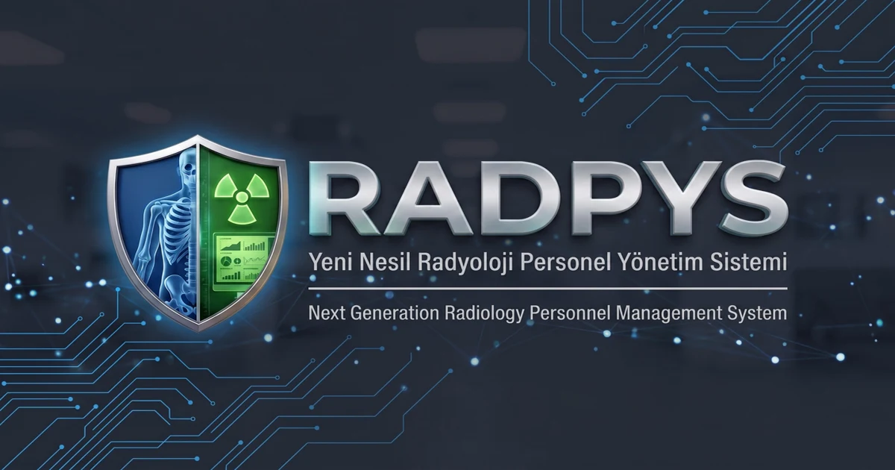

Sağlık fiziği bilenler, yazılımı iyi bilenler.

RADPYS, radyasyon iş kolunda çalışanların günlük operasyonlarını güvenli, şeffaf ve denetime hazır kılmak için sağlık fizikçileri ve yazılım mühendisleri tarafından geliştiriliyor.
Yaklaşımımız basit: dağınık Excel çizelgelerini, kaybolan dozimetre raporlarını ve WhatsApp nöbet karmaşasını yerinden edeceğiz. Kurumsal hafıza ve radyasyon güvenliği, insan hafızasına bırakılamayacak kadar hayatidir.
Mevzuat gelişir,
RADPYS öncülük eder.
Sağlık fiziği ve yapay zekâ uzmanlığımız sayesinde NDK, DIN 6857-1, IAEA ve Sağlık Bakanlığı standartlarındaki teknolojik dönüşümü şekillendiriyoruz. Gelecek nesil radyoloji yönetiminde kestirimci analitik, DICOM köprüleri ve IoT telemetri çözümleriyle sektöre liderlik ediyoruz.
Öngörücü Doz Tahmini
Geçmiş trendleri yapay zekâ ile işleyerek NDK limit aşım risklerini 6 ay önceden tahminleyen erken uyarı motoru.
PACS RDSR Doz Köprüsü
BT ve Anjiyo cihazlarından çıkan DICOM RDSR yapısal doz verilerini doğrudan PACS sunucusundan otomatik okuma.
IoT Gerçek Zamanlı Sensörler
Kablosuz oda radyasyon dedektörlerinden gelen anlık telemetri verilerini kat planlarında canlı ısı haritasına dönüştürme.
Bakanlık & NDK Bulut Köprüsü
Ulusal sağlık sistemleri ve denetim portalları ile çift yönlü, şifreli ve otomatik veri senkronizasyon katmanı.